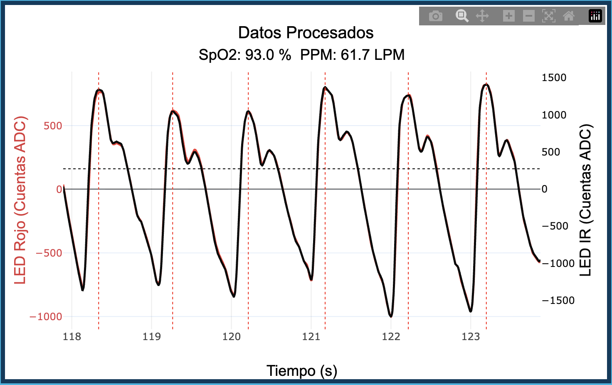
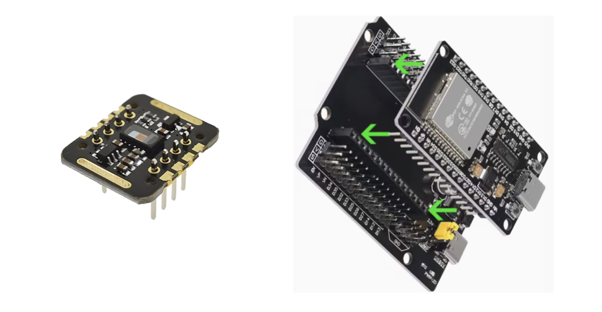
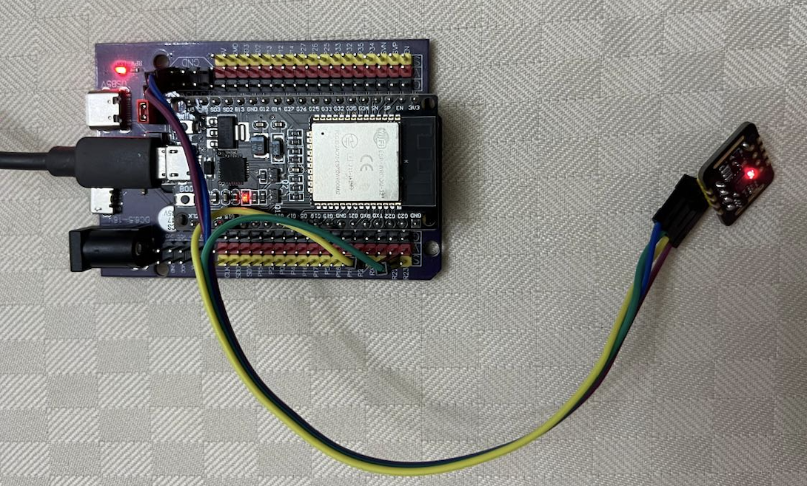

08 de Mayo, 2026
El Oxímetro Digital es un sistema desarrollado con fines exclusivamente educativos y de investigación. Este dispositivo no ha sido certificado como equipo médico ni cumple con normativas regulatorias para uso clínico.
La información proporcionada por el sistema, incluyendo valores de saturación de oxígeno en sangre (SpO₂) y la frecuencia cardiaca, es de carácter experimental y puede contener errores o inexactitudes.
Por lo tanto:
El uso de este sistema es bajo la responsabilidad del usuario. Los desarrolladores no se hacen responsables por cualquier daño, perjuicio o consecuencia derivada del uso indebido de la información generada por el dispositivo.
Se recomienda que cualquier medición de la saturación de oxígeno en sangre (SpO₂) y de la frecuencia cardiaca con fines clínicos se realice utilizando dispositivos certificados y bajo supervisión médica.



| Componente | Pin | Conexión |
|---|---|---|
| Sensor MAX30102 | VIN | 3.3V del ESP32 |
| Sensor MAX30102 | GND | GND del ESP32 |
| Sensor MAX30102 | SDA | GPIO21 del ESP32 |
| Sensor MAX30102 | SCL | GPIO22 del ESP32 |
#include <Wire.h>
#include "MAX30105.h"
MAX30105 particleSensor;
const byte SAMPLE_AVG = 1;
const byte LED_MODE = 2; // Red + IR
const int SAMPLE_RATE = 200; // SPS
const int PULSE_WIDTH = 411; // µs
const int ADC_RANGE = 4096;
const byte LED_BRIGHTNESS = 70;
void setup() {
Serial.begin(115200); // más rápido → menos latencia Serial
Wire.begin(21, 22);
Wire.setClock(400000);
if (!particleSensor.begin(Wire, I2C_SPEED_FAST)) {
Serial.println("# ERROR: MAX30102 no encontrado");
while (1);
}
particleSensor.setup(
LED_BRIGHTNESS,
SAMPLE_AVG, // 1 = sin promedio → máxima resolución temporal
LED_MODE,
SAMPLE_RATE,
PULSE_WIDTH,
ADC_RANGE
);
particleSensor.clearFIFO();
Serial.println("# ir red t_ms");
}
void loop() {
if (particleSensor.available() == 0) {
particleSensor.check(); // pedir al sensor que llene el FIFO
return;
}
uint32_t ir = particleSensor.getFIFOIR();
uint32_t red = particleSensor.getFIFORed();
particleSensor.nextSample();
float t_ms = micros() * 0.001f;
char line[48];
int len = snprintf(line, sizeof(line), "%lu %lu %.2f\n", red, ir, t_ms);
Serial.write((uint8_t*)line, len);
}